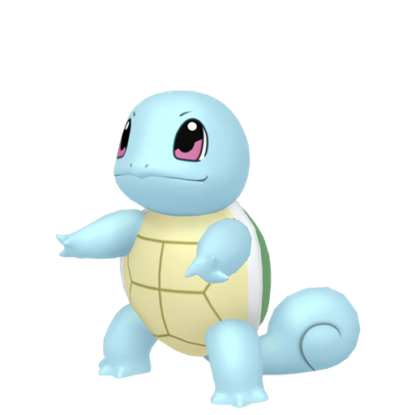

Anthony RITADévloppeur Web / Web Mobile

A PROPOS
En cours de réorientation professionnelle, je me forme actuellement à la programmation orientée objet et à l'algorithmie. Pour valider mes connaissances en Java, j’ai créé un outil de conception de map 2D dans le Shell et je suis en train de reproduire la mécanique de combat d’un jeu vidéo. Mon expérience passée en restauration m’a amené à savoir faire preuve d’organisation et de rigueur pour gérer une équipe. Je devais aussi être à l’écoute et réactif pour répondre aux attentes des clients. Des atouts que je souhaite mettre au service de mon futur métier.
 Compétences
Compétences